<title>Minimal Dock Concepts</title>
<style>
:root{--bg:#f5f0e6;--fg:#231c2e;--mut:#6c6178;--card:#fffaf2;--line:#e2d8c8;--acc:#c2338a}
@media (prefers-color-scheme:dark){:root:not([data-theme="light"]){--bg:#16121c;--fg:#efe8f6;--mut:#a89bb6;--card:#211b2a;--line:#342a40;--acc:#ff6fbf;color-scheme:dark}}
:root[data-theme="dark"]{--bg:#16121c;--fg:#efe8f6;--mut:#a89bb6;--card:#211b2a;--line:#342a40;--acc:#ff6fbf;color-scheme:dark}
body{background:var(--bg);color:var(--fg);font:15px/1.5 system-ui,sans-serif;padding:24px 16px}
main{max-width:1100px;margin:0 auto;display:grid;gap:20px}
h1{font-size:1.6rem;margin:0;text-wrap:balance} .lead{color:var(--mut);max-width:65ch;margin:4px 0 0}
.grid{display:grid;grid-template-columns:repeat(auto-fill,minmax(320px,1fr));gap:16px}
article{background:var(--card);border:1px solid var(--line);border-radius:12px;padding:14px;min-width:0}
h2{font-size:1.05rem;margin:0 0 8px} h2 span{color:var(--acc);font-variant-numeric:tabular-nums;letter-spacing:.04em}
.pair{display:grid;grid-template-columns:1fr 1fr;gap:8px} figure{margin:0} img{width:100%;border-radius:8px;display:block}
figcaption{font-size:.75rem;color:var(--mut)} p{margin:8px 0 0} .flag{color:var(--mut);font-size:.88rem}
</style>
<main><header><h1>Đế gọn — 6 hướng mới</h1><p class="lead">Màn 3.95" (kính 84 mm) giữ nguyên, thân máy ~95 × 95 × 15 mm, nghiêng 22°. Đế nhỏ hơn thân máy ở mọi phía. Theme synthwave, arcade và thiết bị tương lai. Mỗi hướng hai biến thể.</p></header>
<section class="grid"><article><h2><span>M1</span> Sunset Fin</h2><div class="pair"><figure>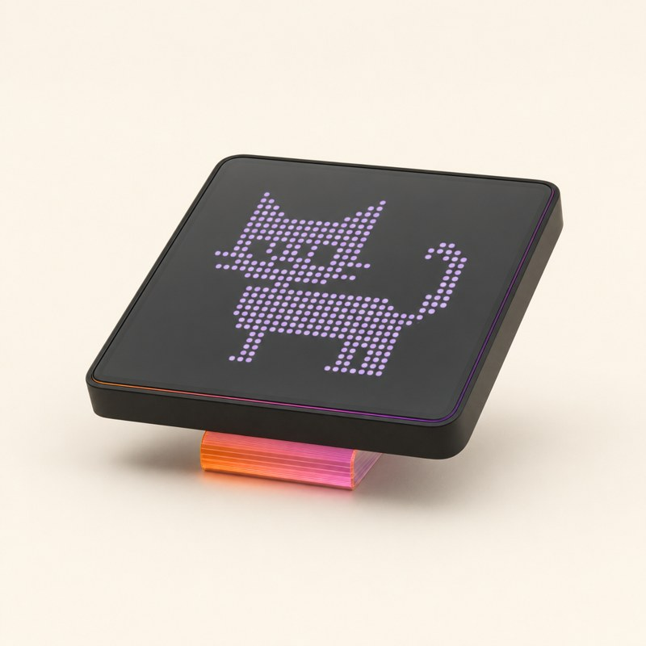<figcaption>m1_a</figcaption></figure><figure>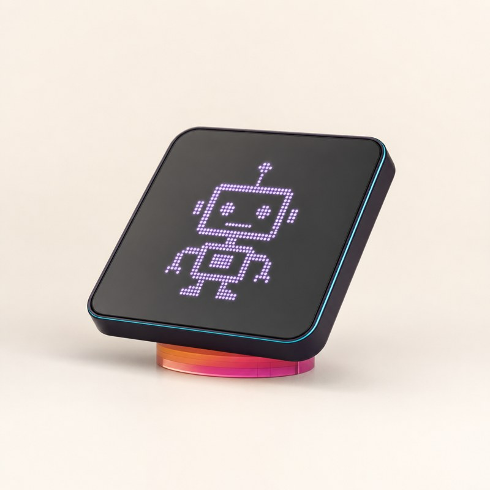<figcaption>m1_b</figcaption></figure></div><p>Đế là một vây acrylic mỏng dưới tâm máy, sọc hoàng hôn phát sáng. Máy như lơ lửng.</p><p class="flag">Ổn: góc nghiêng thấp, đế rất nhỏ.</p></article><article><h2><span>M2</span> Arcade Puck</h2><div class="pair"><figure>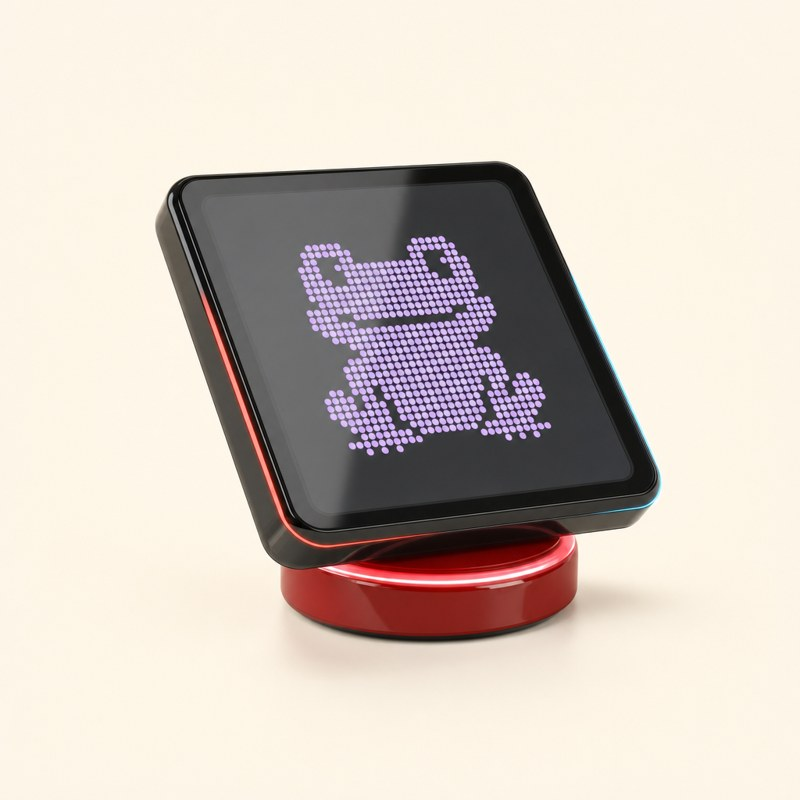<figcaption>m2_a</figcaption></figure><figure>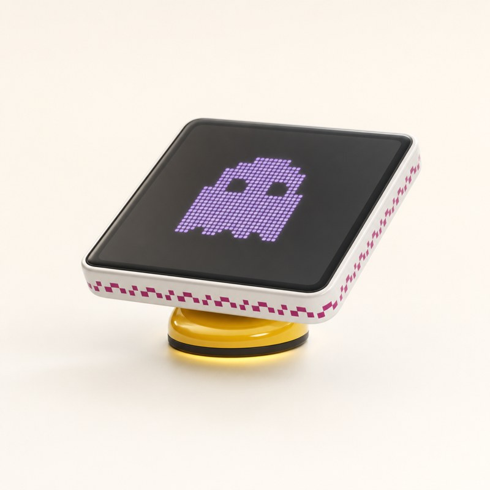<figcaption>m2_b</figcaption></figure></div><p>Đế là một nút arcade tròn (Ø55–60) cắt nghiêng, vòng sáng quanh mép.</p><p class="flag">Ảnh a vẽ máy dốc hơn 22°.</p></article><article><h2><span>M3</span> Pixel Step</h2><div class="pair"><figure>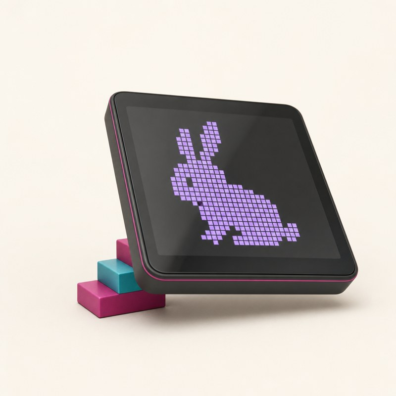<figcaption>m3_a</figcaption></figure><figure>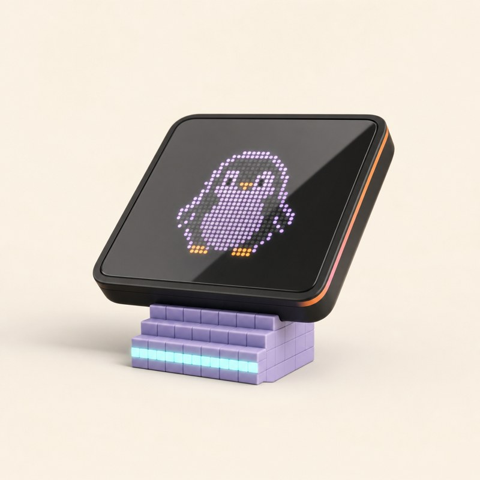<figcaption>m3_b</figcaption></figure></div><p>Đế là bậc thang voxel kiểu 8-bit.</p><p class="flag">Ảnh a đặt bậc lệch sang một bên; ảnh b đúng ý (bậc dưới tâm).</p></article><article><h2><span>M4</span> Hover Rail</h2><div class="pair"><figure>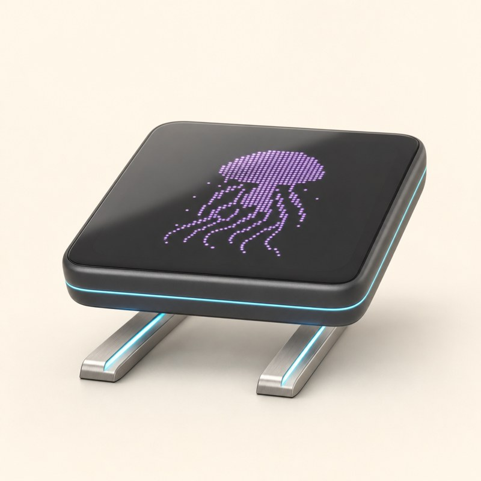<figcaption>m4_a</figcaption></figure><figure>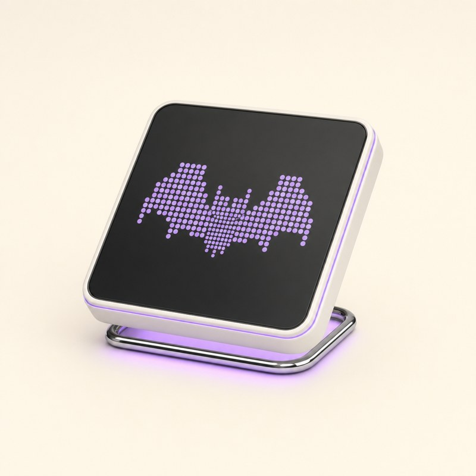<figcaption>m4_b</figcaption></figure></div><p>Hai thanh ray kim loại mảnh như đường maglev, có dải sáng bên dưới.</p><p class="flag">Ray in 3D phải dày hơn ảnh (≥ 6 mm).</p></article><article><h2><span>M5</span> Holo Prism</h2><div class="pair"><figure>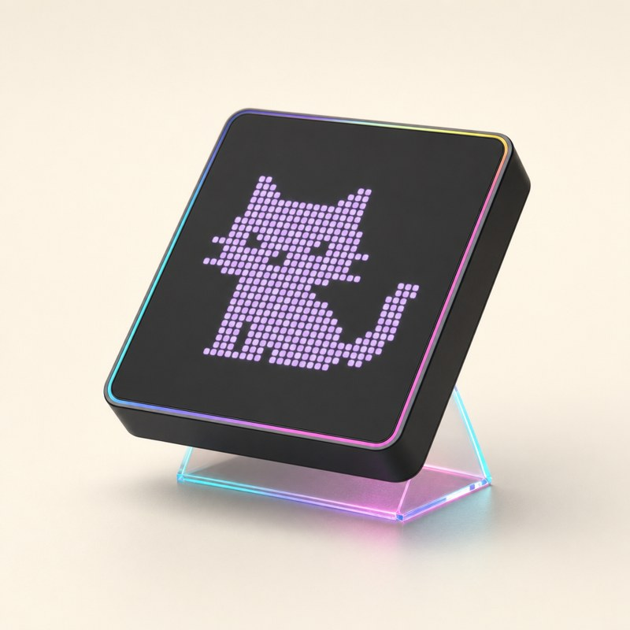<figcaption>m5_a</figcaption></figure><figure>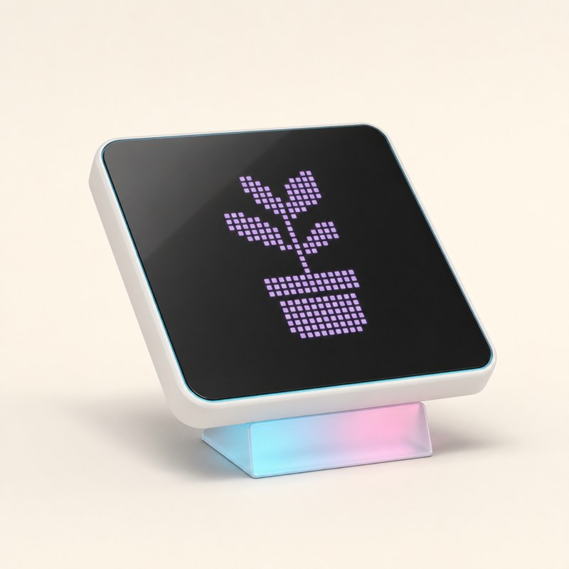<figcaption>m5_b</figcaption></figure></div><p>Lăng trụ trong suốt chiếu sáng cạnh; máy gần như bay.</p><p class="flag">Ảnh a dốc hơn 22°. Trong suốt cần in nhựa trong hoặc mua acrylic.</p></article><article><h2><span>M6</span> Mini Grid</h2><div class="pair"><figure>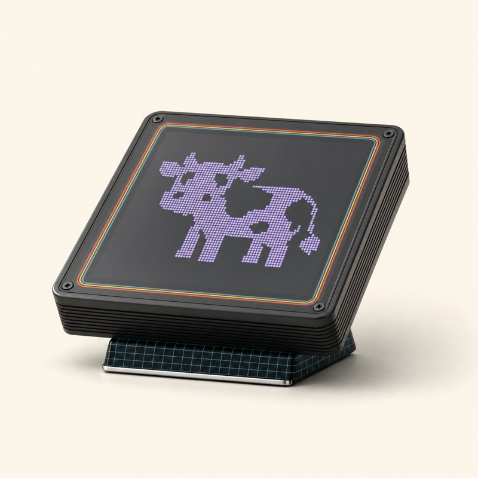<figcaption>m6_a</figcaption></figure><figure>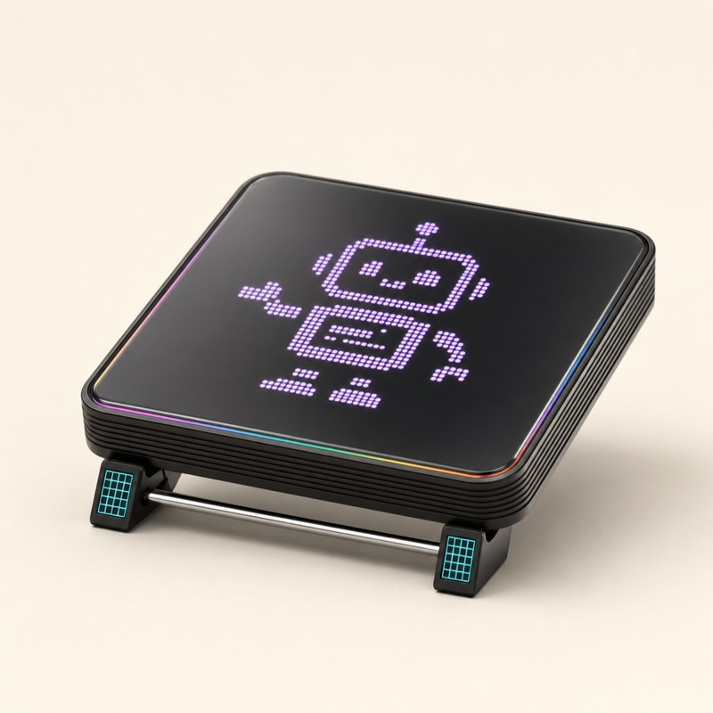<figcaption>m6_b</figcaption></figure></div><p>Giữ vỏ VC4 (sọc cầu vồng, gân bên, ốc góc), đế CUR thu nhỏ: nêm hẹp (a) hoặc hai chân + thanh chrome (b).</p><p class="flag">Gần thiết kế CUR nhất; vẫn có chỗ cho chân pogo.</p></article></section></main>